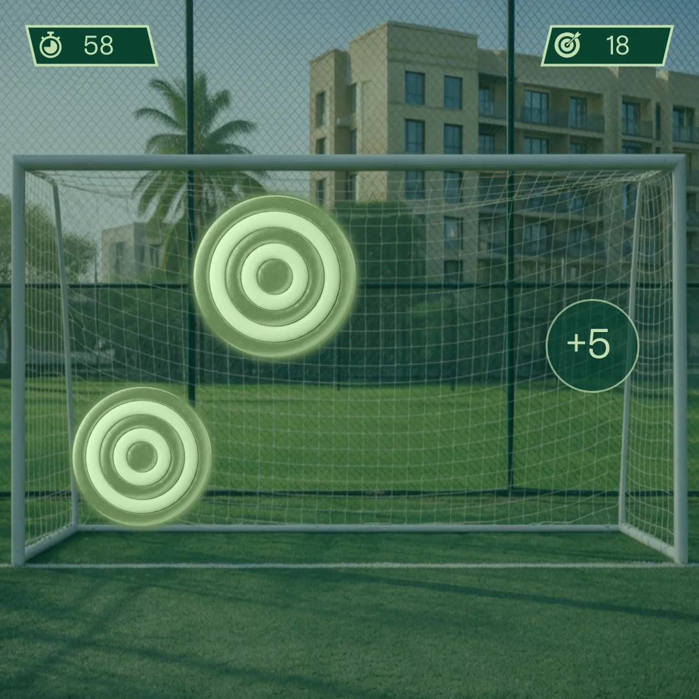

Glowing goal targets
The first native Illustrator artboard places two concentric targets within a goal net against a residential courtyard image.
The goal, the score and the moment.
Explore the story
Keep targets and scoring cues readable against a photographic stadium setting.
Glowing targets occupy the goal while timer and score indicators sit apart. A compact scoring response adds another layer of feedback to the square composition.
The first native Illustrator artboard places two concentric targets within a goal net against a residential courtyard image.
A timer marked 58 and target-score indicator marked 18 occupy the upper corners; a +5 indicator shows a proposed scoring response.
This hero is a faithful export of artboard 1, not a captured running game. Artboard 2 names a footballer and is excluded from the portfolio asset.
Explore the complete compositions and interface states. Select any image for a closer look.
Structure, interaction and visual decisions that give the work its character.
RoleContribution awaiting confirmation
AssetsPrivate evidence draft. Individual contribution and public use are unverified. File presence does not establish personal authorship or original modeling. Supplied, licensed and AI-assisted components require separate credit. No athlete participation, endorsement or collaboration is claimed. The excluded second artboard requires separate likeness review.
StatusPrivate evidence draft; contribution and final delivery unverified